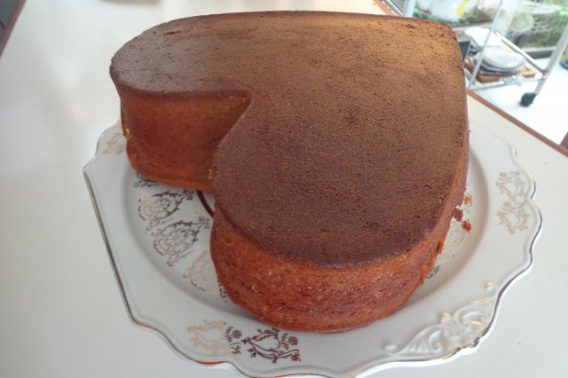

PASTEL DE MAMEY
Delicioso pastel con un sabor muy original y delicioso a mamey. Es muy recomendable para festejas cualquier ocasión.
Ingredientes
- 200 gramos de mantequilla
- 18 gramos de azúcar
- 7 piezas de huevo
- 2 tazas de harina
- 1 cucharadita de polvo para hornear
- 1 taza de mamey en cuadros
- 3/4 de taza de leche evaporada
- 1 pizca de sal
Preparacion
-
Moler en la licuadora el mamey con la leche.
-
Batir la mantequilla con el azúcar (aprox. 3 minutos).
-
Añadir las 7 yemas una por una. Batir otros 3 minutos.
-
Agregar el mamey molido y batir 2 minutos más.
-
Agregar poco a poco el harina cernida con el polvo para hornear y la sal en forma envolvente.
-
Por último, añadir las claras batidas a punto de nieve en forma envolvente.
-
Vaciar al molde. pre-calentar el horno y hornear a 180 grados, de 50 a 60 minutos aprox, hasta que al introducir un palillo salga limpio.
-
Deja enfriar 10 minutos y desmoldar. Adornar al gusto.